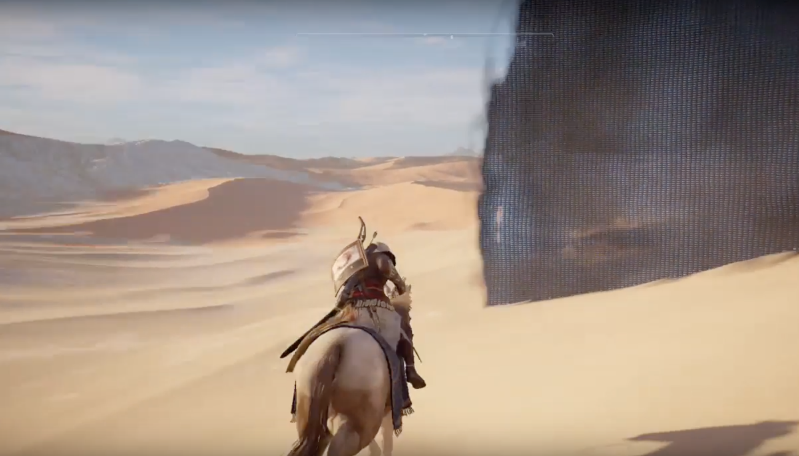
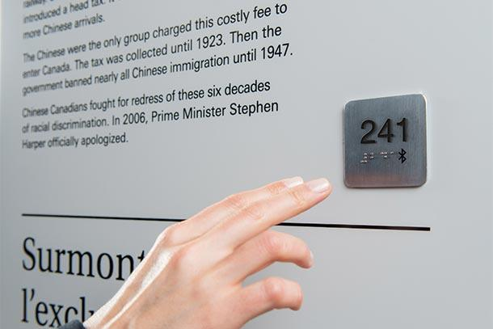

Navigation and Visitor Interactions:
Best Practices, Tools, and Technologies
ENAS410/ARCH390: Making Spaces, Assignment 4
Sarim Abbas, Antonio Cao, Julia Ma, Evan Smith
Table of Contents
While “interactive exhibit” tends to conjure images of screens and digital content, museums have long been providing ways for visitors to engage with the content behind the glass. This engagement is perhaps best characterized in the Discovery Room on the second floor of the Peabody, a designated space to bring hands-on interaction with living animals and other natural treasures. “The Discovery Room’s most important rule is ‘Please Touch!’” proclaims its website,*Yale Peabody Museum of Natural History, “Discovery Room.” and it follows through on that rule. With large numbers of children coming to the museum daily, such a child-focused area sees heavy use and is extremely popular (over 60,000 visitors visit the space annually out of 150,000 total).
We set out to explore ways in which an expansion of the Discovery Room’s philosophy to the wider Peabody experience could help increase engagement amongst children, adults and those with disabilities. We also wanted to explore novel tools and technologies that could help visitors interact with exhibits and navigate the museum space. We took inspiration from the existing exhibits and interactions at the Peabody, and the innovative work being done by other museums and creatives.
What follows is an assessment across four dimensions: interactive screens and digital exhibits, virtual and augmented reality, localization technology, and accessibility considerations. When conducting our research, we tried to be mindful of the Peabody’s mission to be a center for advancing science and maintaining good stewardship over its collections. As next steps, we propose taking the pulse of the Peabody staff in the kinds of technologies that they are interested in exploring, and then diving deep into how those may be used to best complement the museum’s rich history and important collections.
Screens and Interactive Exhibits
TOP
Touchscreens
A crucial first step in the process of engaging visitors is bringing text and images out from behind the glass of an exhibit and into a more interactive setting. While physical interactions with the specimens are possible in very select cases, these interactions require the oversight of a museum employee or volunteer. The Peabody already has taken steps to that effect, with touchscreen kiosks in both the Great Hall and Human Origins exhibit, but there are clear points for further growth and innovation.
First, the underlying technology of touchscreens has taken enormous strides in recent years. Personal experimentation with the screens currently installed quickly revealed that of the two installed in the Human Origins exhibit, one is inaccurate by almost four inches while the other does not register touch input at all and cannot be moved off of the starting screen. The screen in the Great Hall has large speakers lining the sides which play an unprompted audio introduction to every new display of information. In an often quiet and contemplative space, the sudden and unexpected sound can be jarring and off-putting to both users of the system and passive visitors elsewhere in the Hall.
These old implementations of touchscreen kiosks may not have aged gracefully, but their information density is an indispensable tool in a museum like the Peabody. Even with the huge increase in exhibit space, the museum has vastly more artifacts than can ever be displayed in the physical exhibit halls, and many items have much more information to explore than can fit on a placard. Touchscreens help alleviate these issues, since one screen can effectively be many multiples of its area worth of information. Beyond that, with the right data management system the information can be updated in an instant and a library of content can be easily rotated through the museum, enabling much faster turnover of exhibits without needing to fabricate new physical signage for every iteration.
With the need to use such screens in the space, a look at current touchscreen technology reveals how far the products have come. One of the industry leaders is Ideum,*“Ideum Multitouch Tables, Touch Screens, and Exhibit Displays.” which offers large-scale touchscreen tables (referred to as touch tables), and more conventional angled screens. Most of their products feature integrated computing, eliminating the need to build space for a concealed computer to route information to the screens. They also support usage by up to eight users at a time, reducing the wait time for visitors to access the information. Contrast this with the screen in the Great Hall, where the usage pattern generally consists of one group at a time using the screen to page through information without others being able to either use the screen or even see what is being explored. A touch table breaks out of the historical use of these types of exhibits as desktop-style browsing by one user. Instead, a dynamic user interface can allow information to “float” around the screen, with different stages of the information intermingled. This approach supports many users are looking at the same elements of the content at once (for example, the case of a group all reading the introduction), or each user exploring what interests them (each guest wants to learn about the discovery of a different specimen). The content can be freely rotated and sized on the screen based on the orientation of the user and varying visual needs.
While many of Ideum’s products are industry-standard and mostly building upon previous iterations of touchscreen technology, their Tangible Engine software*Spadaccini and McDonald. “The Evolution of Tangible User Interfaces on Touch Tables: New Frontiers in UI & UX Design.” is a leader in merging physical objects with capacitive touchscreens. By placing unique patterns of conductive material onto small puck-like bases, the program can identify physical items when placed directly on the touch table without a seperate identification system like RFID and an overhead tracking system with cameras, which was the previous standard way to achieve such a physical interaction with the screen output. These bases can either be representative (such as if they were printed with images of different dinosaurs), or literal, providing the item in question is relatively small, such as a shell or 3D print of a specimen. Since the bases are identified both in content, location, and orientation, users can select a physical model they are interested in, place it on the screen, and information appears around it. The user can then twist the base to orient the information to them, or pass it to another user to look at on a different part of the same screen.
This particular iteration of the touchscreen evolution is particularly appropriate for a museum like the Peabody, where there is such a huge catalogue of items that can fit in Petri-like containers. As shown in Figure 1.1Figure 1.1: Ideum touch table with Tangible Engine interacting with Petri dishes, the interaction of small specimens with the screen and the resulting touch menus that spread out of it is entrancing. Imagine an exhibit on shells where the visitors can select an shell that interests them and see the environment it came from spring to life on the screen around it, with information about the species, as well as the other elements it is connected to in the ecosystem and directions to where those elements are located elsewhere in the museum.
This technology can also be used to create interactive gamification, as shown by the Rio Tinto Alcan Planetarium in Montreal.*Space for Life, “Exo: Our Search for Life in the Universe.” Their EXO exhibit features several round screens representing Earth right after its creation. By placing pucks of different graphics onto the screen, visitors can add meteor collisions that bring water, microorganisms to the oceans, greenhouse gases to build up the atmosphere, and finally manipulate the digital globe to see their handiwork.
Simply updating the existing touchscreens in the museum to more modern specification is a necessary step to take advantage of the information density they offer, but augmenting the experience with physical elements creates an extremely powerful interactive tool while maintaining the Peabody’s focus on physical artifacts. It does enlarge the size of the screens in the space, but the number of users also drastically increases and encourages more personalized exploration of the information on hand.
Opportunities for Expansion
Though the Peabody currently features a few touchscreens described above, the vast majority of informational elements of the museum space use conventional, non-dynamic methods such as printed signs, placards, and diagrams. To be clear, this paper does not seek to fully replace every instance of such information. The density of the information provided by digital signage can be a double-edged sword: too much of it could overwhelm guests and keep them from interacting at all. There is an inherent beauty to clean, physical signs, especially in the context of historical exhibits where screens can be anachronistic. Furthermore, the nature of traditional screens means that the traditional lighting angle is reversed. That is, instead of lights pointing at signs and placards, the primary light source comes from the screen itself. This gives the curators less control over the intensity and brightness of a space, since direct light onto a screen is almost always disruptive, with very specific exceptions.
Consider David Friend Hall if each mineral’s information was provided by a small screen: the striking darkness and contemplative nature of the space would be drastically affected. For this reason, museum-wide adoption of traditional, backlit screens for all text display is not preferable.
However, there do exist non-backlit digital displays that may be more suitable called “digital paper”.This technology was popularized by the Amazon Kindle, which showcased its major features: it is a passive display, meaning it only consumes power to change the current screen output and otherwise is off, and matte surface interacting naturally with ambient light. These two features make digital paper an ideal solution to dynamically updating signage in a space while maintaining full control of the lighting environment and minimizing power consumption. The battery-powered options from Visix*Visix, “Digital Signage Software | E-Paper Room Signs.” can last up to 10,000 updates, which makes the power supply about as future-proofed as possible for battery replacement while removing any additional wiring challenges and allowing for movement to different parts of the museum. The Visix signs are updated by a Radio-Frequency (RF) transmitter, and can be used to probe the current battery life of signs to proactively replace batteries in the case of failures. For a Peabody looking to reimagine itself as a dynamic, constantly evolving space, easy changeable signage without wasteful reprinting seems to be a must. Beyond the functional elements, though, it is not hard to imagine an implementation of digital paper as a more interactive element in a gallery where low light levels are required, as long as the information is not in color or animated.
There are other areas of the museum where the intention of the current conventional signage is ready-made for update by animated content on screens. Consider the various dioramas in the Peabody: they all have images similar to Figure 1.2Figure 1.2: Current labelling of a Connecticut Diorama at the Peabody, with a sketch of the diorama overlayed with labels and a corresponding key with information about the flora and fauna inside. Imagine instead a high-resolution picture of the diorama on a small touchscreen with understated outlining around the items of interest. In much less space, the screen can provide all the information of the conventional image while avoiding the deciphering stage and can be coupled with minor gamification to increase interaction with the dioramas themselves. This could take the form of an I-Spy-style game where the screen can prompt visitors to find a certain number of animals or types of animals within the diorama and show correct answers. Additionally, the difference between independently looking at the dioramas and hearing about them from an experienced curator is dramatic. The design of these exhibits is a historical marvel of the Peabody, and there would be great value in bringing attention not only to the individual specimens but the layered storylines within. With digital signage, visitors can discover a different drama each time they visit, as they are prompted to notice the bird distracting a predator from her nest one day, and the perfectly camouflaged butterfly on the tree trunk the next.
Conclusion
With a more focused eye on the possibilities of digital 2D content within the Peabody, there are significant opportunities to increase visitor interaction, both directly in the functionality of existing exhibits and also by streamlining exhibit cycling, making the museum’s content equally engaging each visit. Though traditional screens are by no means always the answer to conventional signage, digital paper can combine the best of both worlds in certain situations.
Virtual Reality and Augmented Reality
TOP
Discussions on museums adapting modern technologies would not be complete without referencing Virtual Reality (VR) and Augmented Reality (AR). These technologies have been in use by museums at least as early as 2010, but it is only within the last five years that the advent of lighter, cheaper headsets, tools and software have unlocked the promise of these technologies.
VR refers to a purely simulated or virtual environment. Whether by donning a headset or stepping into a simulated space, the reality shown is distinct from the real world. On the other hand, AR techniques ‘augment’ the world around us, for instance by melding it with virtual objects. Both AR and VR have the ability to alter our perception of the world. Cognisant of the Peabody’s needs and challenges, this discussion will consider use cases for:
- Adding interactivity to exhibits
- Navigating through the museum space
For each use case, it will reference AR and VR solutions that tend to fall into (often a mix of) two categories:
-
Consumer technology
- Smartphones
- Special hardware e.g. headsets
- Immersive spaces
Exhibit interaction
The Night at the Museum franchise played with the idea of museums come to life. There is something exciting and immensely educational about an exhibit (such as a Neanderthal), volunteering a first-hand account of its life and experience. AR/VR can bring us ever closer to such a fantasy, transforming static exhibits to dynamic ones.
Consumer technology
Smartphones (AR)
Figures 2.1 Figure 2.1: A smartphone app that allows visitors to interact with digital replicas (RiseAR) and 2.2
Figure 2.1: A smartphone app that allows visitors to interact with digital replicas (RiseAR) and 2.2 Figure 2.2: An imagining of dinosaur appearance and behavior with AR (NHM London) are representative examples of consumer AR experiences offered in museums today. The first figure shows a proof-of-concept by the UK-based company, RiseAR.*“Rise AR: The UK’s Leading Augmented Reality Development Company.” When a special code (similar to a QR code) is viewed through a smartphone camera, the encased specimen appears as a high-resolution 3D model, which can be freely magnified or rotated. The motivation behind the AR app is to encourage visitors to closely inspect the physical characteristics of a specimen as it lived.
Figure 2.2: An imagining of dinosaur appearance and behavior with AR (NHM London) are representative examples of consumer AR experiences offered in museums today. The first figure shows a proof-of-concept by the UK-based company, RiseAR.*“Rise AR: The UK’s Leading Augmented Reality Development Company.” When a special code (similar to a QR code) is viewed through a smartphone camera, the encased specimen appears as a high-resolution 3D model, which can be freely magnified or rotated. The motivation behind the AR app is to encourage visitors to closely inspect the physical characteristics of a specimen as it lived.
The second figure—somewhat related—shows visitors at the Natural History Museum, London looking through their screens at an animated dinosaur model. The animation communicates aspects about dinosaur appearance and behavior that is inadequately described by fossils and illustrations alone. In contrast to a video playing on a flat screen, the AR experience lets viewers walk ‘around’ the specimen and focus on parts they want to see. The experience is packaged into an app so that visitors can use their personal devices, but for those without smartphones, a limited number of museum iPads are available for use.
Just five years ago, developing such interactions would have been time-consuming and expensive, requiring proprietary tools or experimental open-source software. Today, with the advent of ARKit and ARCore (available on the iOS and Android platforms respectively), as well as free, cross-platform tools like the Unity game engine, it has become inexpensive and simpler to develop such applications. At Yale’s Tsai Center for Innovative Thinking, for instance, Blended Reality workshops instruct students how to create AR worlds in half an hour, with no code.*“Welcome | Blended Reality: Applied Research Project.” Part of the reason building AR (and VR) has become easier is because modern tools abstract away the technical difficulties of anchoring perspective, identifying planes, and interfacing with headsets. The bulk of a developer’s time is spent modelling and animating objects. This means that modern AR/VR is closer to an art form than an engineering problem, which takes time to get right for each specimen.
Having considered these canonical examples, we might consider how AR experiences may integrate with current Peabody exhibits. It is unfortunate that the Peabody is rich with history about the origins of specimens, scientific rivalries and controversies, but there is not enough room to fit all this information onto a few displays. The addition of unique QR-like codes to each display case could allow a smartphone app to serve up any number of 3D specimen models, virtual avatars for guidance, trivia and anecdotal information. A mockup is provided in Figure 2.3 Figure 2.3: AR opens up possibilities for adding dynamism to exhibits (Peabody Museum).
Figure 2.3: AR opens up possibilities for adding dynamism to exhibits (Peabody Museum).
This pop-up information may be curated and refreshed just like physical displays (while arguably consuming less resources), adding an element of dynamism that incentivizes users to keep coming back and try the experience. Used to its full potential, AR can mimic an existing Peabody exhibit that morphs skull to flesh (shown in Figure 2.4 Figure 2.4: Hologram exhibit that transitions between skull and flesh (Peabody Museum)), and make the museum’s monumental specimens come alive. Figure 2.5
Figure 2.4: Hologram exhibit that transitions between skull and flesh (Peabody Museum)), and make the museum’s monumental specimens come alive. Figure 2.5 Figure 2.5: An example of a Plesiosaur skeleton come to life (NHM London) shows the Natural History Museum of London’s attempt at playing with such resurrection.*Ailsa Barry et al., “Augmented Reality in a Public Space: The Natural History Museum, London.”
Figure 2.5: An example of a Plesiosaur skeleton come to life (NHM London) shows the Natural History Museum of London’s attempt at playing with such resurrection.*Ailsa Barry et al., “Augmented Reality in a Public Space: The Natural History Museum, London.”
Scientific consensus on how creatures behaved or looked can also change. The pre-21st century conception of dinosaurs—when Brontosaurus was mounted in the Great Hall—was that they dragged their tails on the ground. More recently, it was shown that dinosaurs are closely related to birds and had feathers. Rather than carrying out costly remounts of fragile bones, or commissioning revised illustrations, curators can instead use AR as a medium to showcase the new while preserving the old.
Headsets (VR)
Though not all headsets are VR headsets, substantially more resources have been poured into VR over AR headset development.*Coie, “2018 Augmented and Virtual Reality Survey Results.” Although AR headsets do exist, such as Google Glass, Microsoft HoloLens and (more recently) Magic Leap One, they are either defunct or not yet available to consumers. In contrast, VR headsets have already been brought to market by manufacturers such as HTC, Oculus, PlayStation and Samsung, and sales are thriving. Prices range from approximately $500 to $1000, although cheaper headsets, like the $20 Google Cardboard, are nothing more than a pair of lenses that make use of a smartphone to power a VR-like experience.*“Get Cardboard – Google VR.” Where high-end headsets excel is their ability to render high-quality graphics, reduce game latency and provide more options for interaction, such as with handheld wands.
All that being said, not many museums provide headsets or encourage patrons to bring their own, and have not developed VR experiences to complement exhibits. This is because of the long standing conception that a controlled environment is needed for a VR experience. Because the virtual world is decoupled from the real, there is a danger that visitors will bump into exhibits and each other. Headsets have also largely remained tethered to powerful computers for processing, further preventing their use in a communal space.
However, technological advances can now conceivably allow visitors to freely roam around the museum. This could allow curators the power to build and place alternate realities wherever they see fit. The first such advance is the consistent increase in processing and rendering power and accompanying decrease in component form-factor. The recently released Oculus Quest is a prominent example of necessary components packed straight into the headset, eliminating the need for a tether. The second is innovation in software that interrupts or warps a user’s view to avoid obstacles. The 3D-sensing startup Occipital, for instance, incorporates a special sensor with a generic VR headset.*Sra, “Asymmetric Design Approach and Collision Avoidance Techniques For Room-Scale Multiplayer Virtual Reality.” Similar to the LiDAR sensors on self-driving cars, it projects a laser pattern onto the surrounding environment, and presents real-world obstacles as impassable walls in the virtual world, akin to that in Figure 2.6Figure 2.6: A real-world barrier can short-circuit a VR experience and warn the user.
Other techniques cause users to unknowingly compensate for scene motion by repositioning and/or reorienting themselves, even on the brink of collision. And lastly, in The Void, a VR video game installation discussed further below, a bank of overhead cameras and sensors communicate with users’ headsets to sync a virtual world with a physical one built of plain bricks and foam.*“The VOID.” With the two worlds in sync, it is possible to easily navigate a shared space, as shown in Figure 2.7 Figure 2.7: A virtual world can be made to coincide with a physical space (The Void).
Figure 2.7: A virtual world can be made to coincide with a physical space (The Void).
These innovations open up new realms for the Peabody. Like smartphone AR technology, the animated renderings of fossils may be communicated to the public, but on a monumental scale. A visitor may be taking a stroll through the quiet, newly-renovated space that houses Zallinger’s Age of Reptiles mural, but after donning a headset, see the room come alive with interacting dinosaurs modelled after the latest research.
Immersive spaces
Kiosks (AR)
Consumer technology, for all its potential, presents some challenges in a museum space. For a natural history museum like the Peabody, the fossils and specimens on display must remain front-and-center. There is a danger in adopting technology, particularly smartphones, that distracts rather than complements exhibits. Furthermore, adoption rates for AR/VR apps tend to be low. Visitors see little incentive in downloading an app for a single visit except for novelty and when content is seldom refreshed, the apps are swiftly deleted. According to the 2017 Making Spaces Orb team’s discussions with the director of the Smithsonian Arts and Industries Building, only 3% of its visitors downloaded the museum’s app a year from its release.
Museums are transforming to meet these challenges. Developing mobile apps, for example, is being seen not as a one-time investment but a continuous endeavor in which new digital content is added and curated—the same treatment given to physical space. Other museums are doing away with the BYOD (bring your own device) trend altogether, and building hardware and spaces that encourage people to put away their phones. At the Smithsonian Museum of Natural History, visitors peer into a screen with their reflection, until the scene comes alive with a Tyrannosaurus rex and a baby Triceratops*Smithsonian Institution, “Walk Among Dinosaurs! Augmented Reality Experience.” (Figure 2.8 Figure 2.8: Spectators clustered around a kiosk that composites their reflection with a digital scene). While some can hold up their phones to the kiosk and experience the AR scene on their own screens, most simply cluster around the reflection and participate in the shared viewing experience.
Figure 2.8: Spectators clustered around a kiosk that composites their reflection with a digital scene). While some can hold up their phones to the kiosk and experience the AR scene on their own screens, most simply cluster around the reflection and participate in the shared viewing experience.
Applied to the Peabody, such interactive kiosks can have great potential. Visitors can learn more about an exhibit, speak to a virtual avatar, play mini-games or uncover Easter eggs. The kiosks can allow visitors to use their phones (with the museum app installed) if they wish. But for those without compatible smartphones, and to incentivize people to stow away their handhelds, kiosks can pair with an inexpensive physical object to allow access to the same content. To give a concrete example, the company Deskfruit manufactures a futuristic, wooden totem with a printed QR-like code that, when scanned, conjures digital items (volcanoes, basketball hoops, flowers) onto a screen*“Deskfruit.” (Figure 2.9 Figure 2.9: Inexpensive, multi-purpose totems can assist with interactive AR (Deskfruit)). Conceivably, such totems may be used to interact with Peabody kiosks, with any digital output rendered to a mounted screen, eliminating the need for a handheld.
Figure 2.9: Inexpensive, multi-purpose totems can assist with interactive AR (Deskfruit)). Conceivably, such totems may be used to interact with Peabody kiosks, with any digital output rendered to a mounted screen, eliminating the need for a handheld.
Purpose-built rooms (AR/VR)
Despite the excitement in AR/VR, most museums have elected not to invest in dedicated spaces for immersion. Such rooms can be prohibitively expensive; at their most refined they can utilize a mix of contiguous wall displays, headsets and equipment that vary temperature, sound and light to play with all the senses.
Though not a museum, the previously mentioned VR installation—The Void—pushes the envelope of such experiences. Patrons are outfitted with a modified Oculus headset and body suit that gives haptic feedback. The physical space is plain—constructed of foam bricks, overhead sprinklers, LED lights, and electric heaters. The space is made to coincide with the virtual simulation, so that when a headset is worn, the player can feel dungeon walls, a rainstorm, the overhead sun and forest fires. A visual is shown in Figure 2.10 Figure 2.10: Well-done VR simulations can transport visitors to alternate worlds (The Void).
Figure 2.10: Well-done VR simulations can transport visitors to alternate worlds (The Void).
We can imagine a museum taking advantage of such a space to reconstruct lost historical narratives or present but distant narratives for its patrons. Users could step into a rendering of the Amazon rainforest to appreciate the species diversity, or ancient artifacts could be situated in context, elevating their importance and increasing engagement. The Art Gallery of New South Wales, for instance, cognizant of the threats that looting, climate change and natural disaster pose to heritage and cultural sites, has reconstructed a Tang dynasty cave as a 1:1 scale AR/VR simulation.*“Pure Land :: Tang :: Art Gallery NSW.” Patrons step into a dark, open space, and either hold up iPads to the wire-framed wall as if a magnifying glass, or wear a headset for a fully immersive experience (Figure 2.11Figure 2.11: High-resolution imagery and AR can be used to preserve heritage sites (Art Gallery NSW)). 24 infrared cameras communicate with the iPads, and a bank of computers renders the real-time view with the Unity game engine.
Controlled environments open up exciting possibilities. A number of museums have attempted to strengthen the connection between researchers and the public by experimenting with open offices. But these initiatives have had mixed success; the concern is that being ‘put on display’ makes researchers less productive. VR can provide a suitable alternative that lets visitors step into researchers’ shoes. In the Peabody’s case, a purpose-built room may simulate the site of an excavation, the tomb of a mummy or the dangerous Wild West at the time of O.C Marsh’s expeditions. Modular rooms built with lightweight materials and an adjustable overhead scaffoldings of cameras and sensors may allow curators to swap out scenarios quickly, adding to a feeling of dynamism in the renovated museum.
Navigation
There is also some potential of AR/VR to assist with navigation through a museum space. Untethered headsets, hypothesized previously, may incorporate turn-by-turn navigation visuals to guide users to their preferred exhibits. The dividends for disabled users (such as those with visual impairments) may be enormous, since the digital interface can fill up the headset’s entire field of view. But until such headsets become a reality, we may attempt to build smartphone and/or totem-enabled AR navigation tools. To give an example, a hypothesized Deskfruit-style totem may be scanned by a smartphone or held under an interactive kiosk to transform into an isometric map (Figure 2.12Figure 2.12: Mockup of a totem for AR navigation). The map can pinpoint the visitor’s position (a digital You Are Here), inform about congestion via heatmap, or trace a path across large spaces or multiple floors.
Few developers are operating in this niche. By and large, any museums experimenting with navigation are using smartphone apps in which they have either built scale models of the exhibit space (such as the Peabody’s David Friend Hall app*“David Friend Hall App | Yale Students : Yale Peabody Museum of Natural History.”) or interfaced with Bluetooth beacons to provide turn-by-turn instructions. A notable example is Project Lumin*“Lumin.” from the Detroit Institute of Art, which uses Google’s Tango framework for indoor tracking and incorporates AR functionality by tracing a path on the floor to the desired exhibit (Figure 2.13Figure 2.13: Turn-by-turn AR navigation (Detroit Institute of Art)).
Conclusion
AR/VR technologies are developing rapidly, and each iteration of smartphone tools, headsets or specialized spaces provides novel opportunities for the Peabody to explore, but their use is not without challenges. In addition to the cost and effort required to craft and curate AR/VR experiences, museums must take care that they do not distract from the physical exhibits—the stars of the show. Any use of these technologies must attempt to intensify displays’ salience and make them come alive.
Navigation Technology
TOP
Types of Localization Technologies
Traditionally, there are three types of indoor localization systems:
- Networked-based systems: localization systems based on a network of beacons, such as WIFI routers or Bluetooth beacons. These systems typically use the information of the wireless signals to estimate the position of a target carrying a wireless device.
- Inertial-based system: localization systems that use built-in sensors, such as accelerometers and cameras in a phone, to measure the motion of a target and estimate its position relative to the starting point.
- Hybrid: localization systems that combine both network-based systems and inertial-based systems to measure the position of the target.
After receiving measurement signals, these navigation systems use a variety of methods to calculate the position of a target. There are four main categories of localization algorithms:
- Simultaneous localization and mapping (SLAM): SLAM is a type of algorithm that enables a measurement unit (typically a mobile robot) to generate a map of its surroundings and its position in this map at the same time. This method assumes that, as a measurement unit repeatedly passes by a set of features, it is possible use these features as referencing points, based on which an algorithm can update the position estimate. In particular, the algorithm takes in sensor measurements, predicts the expected position and sensor measurement, compares the predicted measurements with the actual measurements, and uses the error to update the position prediction algorithm.
-
Range-based algorithms:
- Time of flight: the algorithm measures the propagation time of a signal between the transmitter and the receiver, and uses time divided by the speed of signal to estimate the distance between the transmitter and the receiver.
- Angle based algorithms: the algorithm measures the angle of arrival of a signal, and uses triangulation methods to calculate the position of the receiver.
- Received signal strength: the algorithm measures the received signal strength between a transmitter and a beacon, and estimates the distance between the two based on the fact that signals attenuate as they travel over distances.
-
Range-free:
- Proximity: the algorithm checks if the user’s device is connected to any beacons in the network, and, based on this connectivity data, infers the position of the user. (Figure 3.1Figure 3.1: Schematic of the proximity network. The center grey area is the estimated location.)
- Fingerprinting: the algorithm measures signals received by the beacon network and compares the received data with sample measurements in the database, and selects the position recorded in the database that best matches the received signals. (Figure 3.2Figure 3.2: Example of a sample signal map from the database)
Widely-Used Localization Technologies
WiFi
WiFi-based localization systems use the ranged-based algorithms, the received signal strength, and the fingerprinting algorithm to calculate the distance between a user’s device and a WiFi router.
The main advantages of WiFi localization system are wide-reception range, low cost of material, low energy consumption, and device availability. In particular, almost every mobile phone is equipped with WiFi connection, and thus the visitors to a museum do not have to carry extra devices on them to enjoy WiFi-based navigation technology.
The main disadvantages of WiFi localization system are installation difficulty, poor distance measurement accuracy, and requirement of complex signal processing algorithms. It typically takes an entire research team to build a reliable WiFi-based localization system, and it is very hard to guarantee consistent measurements over time, because the system is highly sensitive to environmental errors. These drawbacks limit the application of WiFi localization system in most public spaces.
For example, in 2013, the Orlando Airport tried to implement a WiFi-based localization system to help travelers navigate and offer location-based notifications. Unfortunately, a test in 2014 showed that a WiFi location measurement could be 30 to 50 feet off of an individual’s actual location because of the varying signal strength in a chaotic public space. Due to this large inaccuracy, the airport decided not to use the WiFi-based localization and switched to Bluetooth beacons instead.
Bluetooth beacons
Similar to WiFi-based localization systems, most Bluetooth beacons also rely on received signal strength or proximity to calculate the relative distance from mobile phones to mobile beacons. Typically, each Bluetooth beacon in a network classifies a phone in immediate, far, and unknown regions, and the intersection of these regions is the estimated location of the phone.
The main advantage of Bluetooth beacons are large reception range, low energy consumption, relatively low cost, and device availability. Similar to WiFi-based systems, Bluetooth beacons are accessible to all major smart devices, but unlike WiFi-based systems, Bluetooth beacons require much lower cost to install, since there are lots of matured Bluetooth products custom-designed to serve localization purposes. Moreover, the state-of-the-art Bluetooth protocol, the Bluetooth 5.0, supports the “Bluetooth Mesh,” which can host over 300,000 mobile devices at the same time. These functionalities of Bluetooth beacons allow the Royal Botanic Gardens, which receives about 1.3 million visitors annually, to push location-based information to the users.
In terms of cost, the benefit of Bluetooth technology is evident in the comparison of its cost to Wifi: the WiFi campaign cost $8136 and the Bluetooth campaign cost $199, which is over 40 times cheaper. (Figure 3.3Figure 3.3: Comparison of location technology prices) On the other hand, Bluetooth beacons also has several disadvantages; Bluetooth beacons have low localization accuracy (the error is typically more than 1 meter), the system is prone to noise, and deployment and maintenance is costly due to the system’s sensitivity to noise.
NFC
Evolved from RFID, the Near-Field-Communication technology operates as a wireless data transfer protocol that detects and then enables technology in close proximity to communicate without the need for an internet connection. For localization purposes, the NFC can act as a proximity sensor to track the user’s location at discrete intervals.
Many museums and amusement parks have used NFC technology to enhance the visitor experience. For instance, the Cooper-Hewitt Pen uses NFC chips to save exhibition data that the user is interested in, and the Disney Magic Band uses NFC technology to unlock the door of the user’s hotel room and send photos to the user’s account.
The main advantages of NFC are low device cost and installation cost. However, they have some major disadvantages that make them undesirable for most localization purposes. First, as tags for localization, NFC chips have a small range of detection, which makes it difficult to measure a user’s movement in space accurately. Second, unlike WiFi and Bluetooth, which is already supported by most smartphones, NFC technology requires the user to approach the chip in close proximity. This can discourage the user to interact with the technology, and for this reason, major manufacturers like Apple have already moved away from NFC.
Practical Considerations of Bluetooth Beacons
Since the Peabody Museum has planned to use Bluetooth beacons as its main localization technology, it is worthwhile to delve into the details of the usage, accuracy, battery life, and maintenance issues of this specific technology. As an overview, please see Figure 3.4Fig 3.4: Comparison of the most popular Bluetooth beacons in the market., a table that compares the most popular Bluetooth beacons in the market.
Of all these products, the three most widely used ones are Estimote, Gimbal Series 10, and Kontakt. Both the Estimote beacon and the Kontakt beacon contain a 1,000 mAh battery that can last about 21 months. However, the battery inside the Estimote beacon cannot be replaced, which means that when the beacon is broken, a new one has to be purchased. The Gimbal Series 10, a cheaper alternative, has a shorter battery life of about 1 month. The same manufacturer also manufactures a larger version called the Gimbal Series 21 that can last about 16 months. Battery life is an important factor because, in a museum setting, replacing the batteries inside dozens of Bluetooth beacons is a very time-consuming task.
Other processes in maintenance include firmware and software updates, regular re-calibration of devices, and physical inspection of the beacons. Devices that have outstanding customer support services will bring a lot of benefits during this process. According to customer reviews and online support forums, the company behind the Estimote beacon responds to customer reports most efficiently and frequently, and this factor partly explains why most large museums like the Metropolitan Museum of Art and the Guggenheim Museum are using Estimote in their spaces.
Despite their effectiveness, Bluetooth beacons in general still suffer from several hurdles in practical applications. According to a research by Rover Labs in April 2015, only 40% of users in the United States across all devices report using Bluetooth. Moreover, though it is possible to push location-based notifications to users without requiring them to download an app, the data is often inaccurate and the functionalities are very limited. To unleash the full advantages of Bluetooth beacon technology, it is necessary, albeit very difficult, for users to install a custom app on their phones. In short, user acceptance is still a serious issue for Bluetooth beacon.
Applications
Magic happens when location data and motion sensors merge with other forms of interaction. Recently, designers, inventors, and scientists have fused these technologies to demonstrate the wondrous future of visitor interaction that engages all human senses.
Navigation and Light
Using mediation headbands, motion sensors, and projection mapping technology, artist Nick Verstand created an installation that envelops a visitor inside a light curtain that vibrates based on the visitor’s mental state. (Figure 3.5Figure 3.5: Laser art by Nick Verstand) Likewise, Japanese design studio TeamLab created a room full of LED panels and projected screens that surrounded the visitors inside a giant vortex that swirled around relative to the visitor’s motion. (Figure 3.6Figure 3.6: TeamLab’s virtual vortex using projections on a dome.) Using similar technologies, the Peabody Museum could create a projection mapped evolutionary tree that grows as the visitor traverses through the Hall of Human Origins or transports the visitor into a panoramic New England farmland from the Southern New England Dioramas.
Navigation and Sound
Combining Bluetooth beacons and their audio tour guide, SFMOMA developed a smart audio app guide that customizes the narrative based on the user’s location and preference. The app can also acts as a voice direction wayfinding tool that helps the user navigate around the museum without pulling out their phones.
Implementing the same idea, in the Hall of Connecticut Birds, a handheld audio device could play different bird calls based on the visitors location and velocity. In addition, there are researchers at the Peabody Museum that study the sound of the bird’s wings. Incorporating location-based sound system in the Hall of Connecticut Birds may be an innovative way to showcase ongoing science at the museum.
While the newest technology could enhance museum experiences to exciting realms we could only dream of in the past, it is always important to think about how all different types of visitors can not only access but also enjoy the same exhibitions. Museums can be spaces to learn, to relax, and to hang out with family and friends, and they provide opportunities that should be available to people with physical, mental, and developmental disabilities. Not only are there common practices to make museum content accessible, there are also new technologies and various programming specifically designed to improve the experiences of visitors with disabilities.
Architectural Features
The Americans with Disabilities Act of 1990 legally requires museums, which count as a public accomodation, to be accessible to all visitors, as a failure to allow individuals access to the space is considered discrimination.*Americans With Disabilities Act of 1990.† United States Department of Justice Civil Rights Division, “Expanding Your Market: Maintaining Accessibility in Museums.” The aspect of accessibility most often addressed is that to do with wheelchair users.*Yale Peabody Museum of Natural History, “Admission & Hours.” Like most buildings open to the public, the Peabody Museum has ramps and elevators, (Figure 4.1Figure 4.1: Peabody Museum Wheelchair Ramp and Elevators) providing access to all parts of the building to wheelchair users.*Yale Peabody Museum of Natural History, “Admission & Hours.” In addition, the Peabody has a small number of wheelchairs to rent free of charge. These features not only benefit those with physical disabilities, but also older adults who may find stairs difficult to use.
Considering the fact that the Peabody’s current structure, which was constructed in 1925,*Peabody Museum, Yale School of Management Case Study, “A Museum of Objects and Ideas.” was not originally built with these visitors in mind, it has done well to provide resources for wheelchair users. However, accessibility programs at other museums have more creative ways to accommodate physically disabled visitors. Many of these spaces were specifically built to have a universal design, a design that benefits all people whether they have disabilities or not.*“What is Universal Design.” The Smithsonian Institution exhibit excellent examples of universal design. In her article “Universal Design and the Museum,” Dr. Aimi Hamraie analyzes “America on the Move,” a transportation exhibit at National Museum of American History. She points out the universal design features are “seamlessly integrated into the design of the exhibit that you will not notice them unless you know what you are looking for.” These include subtle ramps leading into various transportation vehicles on display, removed seating from the same vehicles to allow enough space to enter, and wheelchair space in the front row of the theater. (Figure 4.2Figure 4.2: The Universal Design of “America on the Move” at National Museum of American History) In addition, museum displays and interactive elements are placed at a height and angle that gives access to wheelchair users and young children as well. These features do not intrude on the experience of other visitors and may benefit them, too.
With the Peabody’s new renovation, there are many opportunities to rethink how the space is designed for every visitor. Additionally, with more dynamic exhibit spaces, it is increasingly important to actively consider the concept of universal design.
Navigational Tools
As mentioned in previous sections, recent technology provides many new and exciting possibilities for maps and navigation tools. This, along with a few older methods, can greatly benefit those with disabilities or those who do not read the language of the museum. Conventionally, most museums have wall-mounted maps and directional signs. Some provide paper maps and guides, which allow for variation when temporary exhibits change or special events occur. These maps are usually created with the average visitor in mind. However, there are a few good examples of how navigational tools are made more accessible.
While many museums mark wheelchair accessible entrances and routes on their main map, The Smithsonian Institution offers a variety of separate maps online to download and print or to pick up at information desks.*The Smithsonian Institution, “About the Accessibility Program.” These include an accessibility map that detail wheelchair accessible entrances, curb cuts, paved walkways, and designated parking spots around each museum*Please view at https://www.si.edu/content/ovs/accessmapsindd.pdf and wheelchair and scooter rental information within and around the museums. This is most likely due to the fact that the Smithsonian Institution includes multiple separate museums. Even so, providing maps and resources specifically designed to aid people with physical disabilities can make them less cluttered with information and easier to use.
Museums like the Metropolitan Museum of Art provide maps and guides in many other languages. By doing so, these museums include audiences from a variety of places and cultures. Two years ago, after its rebrand, the Met released a new set of maps. (4.3Figure 4.3: The Metropolitan Museum’s Multilingual Maps) Along with this, they focussed on creating and equally accessible digital version using Living Map’s software, which is similar to Google Maps and uses text labels separate from the map image.*Tallon, “The Future of Mapping and Wayfinding at The Met.” Using this technology, the Met’s digital map is not only much more user-friendly with multiple zoom levels, but also can provide translations to other languages in a much easier and more dynamic way.
In addition to navigation tools for wheelchair users and multilingual visitors, the Smithsonian and many large museums across the globe also offer braille or large print maps and guides for blind or partially sighted visitors.*The Smithsonian Institution, “Accessibility for Visitors.” These not only can help these visitors navigate the museum space, but also can often provide information about the exhibit that they would not be able to read from labels on the wall. Some museums such as the Science Museum, London and the National Air & Space Museum*“National Air & Space Museum – Udvar-Hazy Center Audio-Tactile Museum Guide.” even offer tactile maps, (Figure 4.4Figure 4.4 Tactile Maps) in which the walls and exhibit spaces are marked with raised or textured lines and areas that can be understood through touch. Companies such as TacMap and Touch Graphics specialize in making this type of map, which can be handheld, wall-mounted, or placed a kiosk.
Earlier mentioned location based navigation tools using bluetooth beacons, such as the Orb, have great potential to incorporate various accessibility features. According to one of its creators, Lance Chantiles-Wertz, the Orb has the ability to personalize information such as prefered language and wheelchair use. This information can be used in conjunction with audio directions to provide useful navigation to all different types of visitors.
Advanced Technologies for Assisted Navigation
Other new technologies can also be combined with these navigation tools to help visitors with disabilities. Companies such as Microsoft have used computer vision, infrared sensors, and AI image analysis to build devices that can help blind and partially sighted individuals navigate their surroundings.*Pivothead, “Seeing AI Project.” These devices analyze the environment and use synthesized speech, different sounds,*De Borba Campos, Márcia, et al. “Mobile Navigation through a Science Museum for Users Who Are Blind.” or haptic feedback*MIT CSAIL. “Wearable Blind Navigation.” to direct the user. Researchers have developed a variety ways to haptically communicate directions. At Yale, Dr. Adam Spiers of the GRAB Lab developed a cube-shaped handheld device that gave turn-by-turn navigation directions by rotating and extending. (Figure 4.5 Figure 4.5: Animotus, developed by Dr. Adam Spier)*The GRAB Lab, “Shape Changing Haptic Navigation Interfaces.” The technology used in these types of devices could be used in museums as well.
Figure 4.5: Animotus, developed by Dr. Adam Spier)*The GRAB Lab, “Shape Changing Haptic Navigation Interfaces.” The technology used in these types of devices could be used in museums as well.
In a museum setting, where the layout is known and relatively stable, there is little need for environment analysis. Using location-based technology such as bluetooth beacons, blind or partially sighted visitors could be given spoken or haptic directions in response to their position in the museum. These directions not only help these particular visitors, but also can potentially guide sighted visitors to increase the level of engagement with the physical collections.
Audio Guides
Audio guides are a relatively common feature for museums; the Peabody already has a high-quality, well-produced tour.*Yale Peabody Museum of Natural History, “Audio Tour.” These guides have great potential in allowing blind or partially sighted visitors to enjoy and engage with the collections. These audio tours could be marked with braille labels on the exhibits or on a braille handheld guide. (Figure 4.6Figure 4.6: Braille Audio Tour Label) Even better, location-based technology such as bluetooth beacons are being used to determine the correct audio clip to play in front of certain items. As previously mentioned,*See Navigation Technology: Applications: Navigation and Sound. the SFMOMA uses an app like this.*“The SFMOMA Audio App.”†Chun, “The SFMOMA’s New App Will Forever Change How You Enjoy Museums.” This guide is designed to keep screens away while looking at the museum’s collection, but is perfect to help blind and partially sighted visitors use the audio guides as well.
Though there are many benefits of a good audio tour, it is important to consider how deaf, hard-of-hearing, or non-English speakers can use them. Transcripts and technology supporting assistive listening devices should be provided alongside the audio tours. Translated tours or transcripts should also be provided if resources allow. The Met offers audio tours in English, French, German, Italian, Japanese, Korean, Mandarin, Portuguese, Russian, and Spanish,*Metropolitan Museum of Art, “Audio Guide.” and continues to expand the quality and coverage of their foreign language tours.*Tung, “Improving the Audio Guide: A Look at Our Visitors.” This could be a worthwhile investment for the Peabody to include more types of visitors.
Special Programming
Similarly to audio guides, special tours and programming specifically geared toward certain audiences can significantly enhance a museum visit. Art museums and galleries like Uffizi Gallery and the MoMA provide verbal description and touch tours for blind and partially sighted visitors.*“The Uffizi by Touch Tour.”†MoMA, “Individuals who are blind or partially sighted.” These tours involve a sighted guide describing every detail in the art, from the subject to the background to the texture of the paint and to the color of each element. For the touch tours, visitors may touch certain sculptures with gloves on, as well as tactile images renderings of and three-dimensional renderings of various paintings. (Figure 4.7Figure 4.7: Touch Tours at the American Art Museum, Uffizi Gallery, and Whitney Museum of Art) These techniques could be easily adopted by the Peabody Museum by adding more touchable items and three-dimensional models. In fact, there is already a small-scale implementation of touchable models in the Human Origins exhibit, where there are brass skulls available to visitors. Considering the Peabody’s large volume of detailed scans of its artifacts, 3D printing and casting durable models is certainly feasible, and is already being done for use inside of exhibits. Not only would expanding these offerings to a tactile implementation be beneficial to blind or partially sighted individuals, but it would also be an exciting interactive element for children and other visitors in general.
For deaf or hard-of-hearing visitors, many museums provide sign-language tours. The Museum of Fine Arts, Boston also provides a mobile guide with a recorded video sign-language tour, which is equivalent to an audio guide made accessible to deaf visitors.*“ASL Tours at the Museum of Fine Arts, Boston.” Programs such as these are important to allow visitors with disabilities to feel welcome and included and to have a meaningful visit.
Conclusion
Accessibility is complex but extremely important to think about with regards to museum experience. There are many tools, old and new, that could be used by the Peabody to be more inclusive and engaging to multiple different types of audiences. With the Peabody renovation and the opportunity for new interactive technology, it is essential that we think about the museum’s use by all visitors.
As the Peabody explores new ideas during its renovation planning, we aim to provide a broad overview of techniques, technologies and tools that can assist visitors navigate around museum space and increase interactivity with exhibits. Our findings were split across four dimensions:
First, we considered opportunities for transforming static displays into dynamic touchscreens. The key takeaways were that such screens must be carefully designed to accommodate multiple visitors simultaneously, be intuitive to use, and not detract from the physical exhibits.
The second dimension investigated, VR and AR, gave similar lessons. While previously largely used as gimmicks, these technologies have tremendous potential to make museum spaces come alive, whether by animating skeletons, preserving heritage sites or giving visitors access to supplementary information and virtual avatars at kiosks throughout the museum.
Third, we explored the applications of localization technologies to assist indoor navigation. The technologies spanned the spectrum from WiFi, to Bluetooth, to NFC, each posing unique financial and practical constraints.
Finally, we acknowledged that any potential renovation and digital transformation should accommodate visitors with disabilities, whether in the construction and spatial design of the museum, in upgrading old maps and signage, or in deploying cutting-edge technologies that engage multiple senses.
The intent was not necessarily to prescribe radical changes to the Peabody as it embarks on its renovation. Rather, it was to explore the realm of possibilities and take inspiration from museums, installations, companies, and creators that are working on memorable experiences with their use of modern technologies. Whichever of these many paths it decides to pursue, careful analysis is needed to ensure the proposed technologies are used in a manner consistent with the Peabody’s mission and values.
"A Short Comparison of BLE Hardware for Commercial Use." IT Craft. Accessed September 29, 2018. https://itechcraft.com/ibeacon-development/comparison-of-ble-hardware.
Americans With Disabilities Act of 1990. Public Law 101-336. 108th Congress, 2nd session (July 26, 1990).
“ASL Tours at the Museum of Fine Arts, Boston.” YouTube, March 12, 2018 http://youtube.com/watch?v=HC8C8EEMAZg.
Barry, Ailsa et al., “Augmented Reality in a Public Space: The Natural History Museum, London,” Computer 45, no. 7 (July 2012): 42–47, https://doi.org/10.1109/MC.2012.106.
"Bluetooth Beacons vs WiFi vs NFC : Where Is the IoT Market Headed in 2018?" Learn How You Can Use Beacons and Proximity Marketing. Accessed September 29, 2018. https://blog.beaconstac.com/2018/01/ble-beacons-vs-wifi-vs-nfc-where-is-the-market-headed-in-2018.
Chun, Rene. “The SFMOMA’s New App Will Forever Change How You Enjoy Museums.” WIRED, May 5, 2016.
Coie, Perkins. “2018 Augmented and Virtual Reality Survey Results.” Accessed September 26, 2018, https://www.perkinscoie.com/en/21626/2018-augmented-and-virtual-reality-survey-results.html.
“David Friend Hall App | Yale Students : Yale Peabody Museum of Natural History.” Accessed September 27, 2018. http://peabody.yale.edu/yale-students/david-friend-hall-app.
De Borba Campos, Márcia, et al. “Mobile Navigation through a Science Museum for Users Who Are Blind.” Universal Access in Human-Computer Interaction Aging and Assistive Environments, Constantine Stephanidis and Margherita Antona, ed., June 27, 2014. https://link.springer.com/content/pdf/10.1007%2F978-3-319-07446-7.pdf
“Deskfruit,” Deskfruit, accessed September 28, 2018, http://www.deskfruit.io/.
Ideum. “Ideum Multitouch Tables, Touch Screens, and Exhibit Displays.” Exhibit Design | Touch Tables | Interactive Exhibits. Accessed September 28, http://ideum.com/products.
“Get Cardboard – Google VR.” Accessed September 28, 2018, https://vr.google.com/cardboard/get-cardboard/.
The GRAB Lab. “Shape Changing Haptic Navigation Interfaces.” Accessed September 28, 2018. https://www.eng.yale.edu/grablab/research_shape_changing.html.
Hamraie, Aimi. “Universal Design and the Museum.” Lemelson Center for the Study of Invention and Innovation. Last modified August 22, 2012. http://invention.si.edu/universal-design-and-museum.
"The Hitchhikers Guide to IBeacon Hardware: A Comprehensive Report by Aislelabs (2015)." Aislelabs. Accessed September 29, 2018. https://www.aislelabs.com/reports/beacon-guide/#gimbal.
“Lumin.” Accessed September 26, 2018. https://www.dia.org/lumin.
The Metropolitan Museum of Art. “Audio Guide.” Accessed September 28, 2018. https://www.metmuseum.org/visit/audio-guide.
Misha Sra, “Asymmetric Design Approach and Collision Avoidance Techniques For Room-Scale Multiplayer Virtual Reality,” in Proceedings of the 29th Annual Symposium on User Interface Software and Technology—UIST ’16 Adjunct (the 29th Annual Symposium, Tokyo, Japan: ACM Press, 2016), 29–32, https://doi.org/10.1145/2984751.2984788.
MIT CSAIL. “Wearable Blind Navigation.” Last modified March 22, 2018. https://www.csail.mit.edu/research/wearable-blind-navigation.
MoMA. “Individuals who are blind or partially sighted.” Accessed September 28, 2018. https://www.moma.org/visit/accessibility/sight.
National Disability Authority. “What is Universal Design.” Center for Excellence in Universal Design. Accessed September 28, 2018. http://universaldesign.ie/What-is-Universal-Design.
Pivothead. “Seeing AI Project.” Accessed September 28, 2018. http://www.pivothead.com/seeingai.
“Pure Land :: Tang :: Art Gallery NSW.” accessed September 29, 2018. https://www.artgallery.nsw.gov.au/exhibitions/tang/pure-land/.
“Rise AR: The UK’s Leading Augmented Reality Development Company,” accessed September 27, 2018, https://www.cgeyeltd.com/rise-ar.
SFMOMA. “The SFMOMA Audio App.” Accessed September 28, https://www.sfmoma.org/app.
The Smithsonian Institution. “About the Accessibility Program.” Accessed September 28, 2018. https://www.si.edu/accessibility.
The Smithsonian Institution. “Accessibility for Visitors.” Visit. Accessed September 28, 2018. https://www.si.edu/visit/VisitorsWithDisabilities.
The Smithsonian Institution. “Walk Among Dinosaurs! Augmented Reality Experience.” Accessed September 29, 2018, https://www.si.edu/exhibitions/walk-among-dinosaurs-augmented-reality-experience-5509.
Spadaccini, Jim, and Hugh McDonald. “The Evolution of Tangible User Interfaces on Touch Tables: New Frontiers in UI & UX Design.” Ideum.
Space for Life, “Exo: Our Search for Life in the Universe.” Accessed September 28, 2018, http://www.espacepourlavie.ca/en/exo-our-search-life-universe.
Tallon, Loic. “The Future of Mapping and Wayfinding at The Met.” Metropolitan Museum of Art, April 18, 2016. https://www.metmuseum.org/blogs/digital-underground/2016/future-of-mapping-and-wayfinding.
Touch Graphics. “National Air & Space Museum – Udvar-Hazy Center Audio-Tactile Museum Guide.” Accessed September 28, 2018. http://touchgraphics.com/portfolio/nasm.
Tung, Grace. “Improving the Audio Guide: A Look at Our Visitors.” Metropolitan Museum of Art, June 19, 2015. https://www.metmuseum.org/blogs/digital-underground/2015/improving-the-audio-guide-a-look-at-our-visitors.
Uffizi. “The Uffizi by Touch Tour.” Accessed September 28, 2018. https://uffizi.visitflorence.com/museum-itineraries/the-uffizi-by-touch-tour.
United States Department of Justice Civil Rights Division. “Expanding Your Market: Maintaining Accessibility in Museums.” Information and Technical Assistance on the Americans With Disabilities Act Last modified April 29, 2009. https://www.ada.gov/business/museum_access.htm.
Visix, “Digital Signage Software | E-Paper Room Signs.” Accessed September 28, 2018, http://www.visix.com/products/meeting-room-signs/electronic-paper.
“The VOID.” Accessed September 26, 2018, https://www.thevoid.com/.
“Welcome | Blended Reality: Applied Research Project,” accessed September 28, 2018, https://blendedreality.yale.edu.
Yale Peabody Museum of Natural History. “Admission & Hours.” Visit. Accessed September 28, 2018. http://peabody.yale.edu/visit/admission-hours.
Yale Peabody Museum of Natural History. “Audio Tour.” Visit. Accessed September 28, 2018. http://peabody.yale.edu/visit/audio-tour.
Yale Peabody Museum of Natural History. “Discovery Room.” Education. Last modified November 23, 2010, http://peabody.yale.edu/education/discovery-room.
Yale School of Management. Peabody Museum: Imagining the Future of the Yale Peabody Museum of Natural History. Last modified February 09, 2018. http://vol11.cases.som.yale.edu/peabody-museum.
Zafari, Faheen. et. al., "A Survey of Indoor Localization Systems and Technologies." March 14, 2018. https://arxiv.org/pdf/1709.01015.pdf.